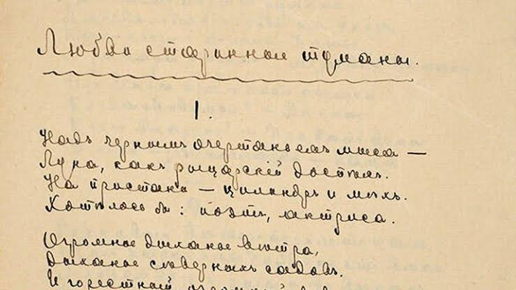

«Моим стихам, написанным так рано…»
Стихотворение «Моим стихам, написанным так рано…»
Подборка строк, отражающих темы и выразительные особенности поэзии Марины Цветаевой.

Перед дословным цитированием проверьте текст и источник по авторитетному изданию.
Стихотворение «Моим стихам, написанным так рано…»
Стихотворение «Кто создан из камня, кто создан из глины…»
Стихотворение «Мне нравится, что вы больны не мной…»
Стихотворение «Идёшь, на меня похожий…»
Стихотворение «Тоска по родине! Давно…»
Стихотворение «Красною кистью…»
Стихотворение «В огромном городе моём — ночь»
Стихотворение «Уж сколько их упало в эту бездну…»
Проверьте точную атрибуцию по надёжному изданию.
Проверьте точный текст и контекст по изданию.
В учебной работе укажите автора, название произведения и издание, по которому проверен текст. Не используйте фразы без подтверждённого источника как дословные высказывания.